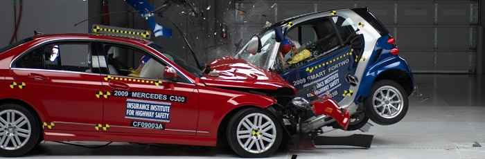
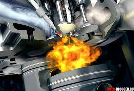

Физика автомобильных аварий, причины аварий и топ безопасных автомобилей

В этой статье обсудим насколько безопасны сейчас автомобили? Почему не сделать машину еще более прочной, и
над чем поработали инженеры, чтобы предотвратить плачевные последствия при аварии?
Давайте разберем все по порядку
В литре бензина содержится около 56
мегаджоулей химической энергии. Это больше, чем при взрыве такого же
количества тротила. И этой энергии хватило бы на целый день работы тостера. Машины работают благодаря сжиганию
бензина, которое превращает химическую энергию в кинетическую, способствуя движению машины.

Восемьдесят процентов энергии теряется в виде тепла в двигателе, но 20 процентов от 56 миллионов джоулей - это
по-прежнему очень много. Необходимо всего 5 чайных ложек бензина, чтобы разогнать 2-ух тонную машину от 0 до 60
км/ч. Это не кажется большим количеством топлива, но энергия машины, которая движется со скоростью 60 км/ч,
сравнима с энергией слона или скорее стегозавра, сброшенного с третьего этажа.
Чтобы машине остановится, вся эта энергия должна куда-то деться. Если машину останавливают тормоза, они
рассеивают энергию с помощью нагрева (и последующего охлаждения) тормозных колодок и дисков. А в случае
столкновения, энергия рассеивается деформацией передней части машины. И так как медленная остановка лучше
быстрой, машины тщательно спроектированы сминаться при столкновении. Это продлевает время столкновения и
остановка требует менее интенсивного тормозящего ускорения.
Большое ускорение очень плохо влияет на человеческие мозги и органы. Но людям не очень нравится водить машины с
длинным передом. У большинства машин есть 50 см сминаемого пространства, в котором они должны рассеять
энергетический эквивалент. Деформация передней части машины должна выдерживать силу, которая равна четверти
тяги основного двигателя шаттла. Больше половины контролируемого смятия должна принять на себя пара стальных
реек, соединяющих основную часть машины с бампером, которые сгибаются и деформируются, чтобы впитать энергию и
замедлить машину.
Всю оставшуюся энергию должна впитать деформация остального металла, находящегося впереди машины. Это
спланированное разрушение дает возможность машине замедлятся быстро, но с приемлемой и стабильной скоростью.
Если бы машины были очень твердыми, то они бы останавливались настолько быстро, что ускорение в них превышало
бы в 15 и более раз то, которое испытывают космонавты на тренировке. Такие огромные перегрузки не совместимы с
жизнью. Инженеры научились делать машины со сминаемыми частями, создающими внутри безопасную зону. Полностью
твердые машины не подходят для безопасности водителя и пассажиров. В полностью твердых машинах даже при
столкновении на совсем небольшой скорости (30 - 40 км/ч) могли бы погибать люди.